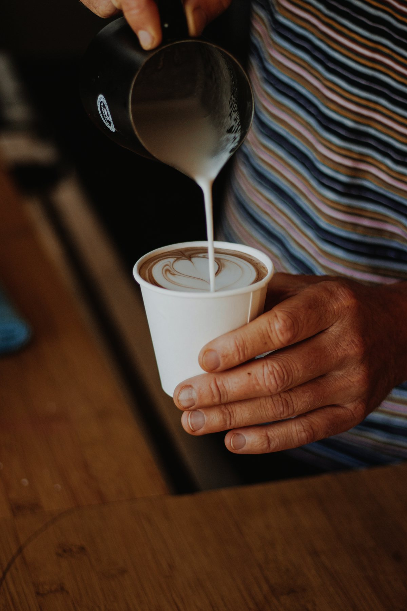

FROM KOZHIKODE. FOR COFFEE PEOPLE EVERYWHERE.
Good coffee.
For your
business.
Your café. Your team. Your next chapter.
We bring the coffee—and the people behind it.
Wholesale coffee · Kerala & across India

01 / A COFFEE PARTNER FOR YOUR PLACE
Different places.
Same care.
A new café or a busy hotel. A bakery counter or the office kitchen. Tell us where coffee fits in your day.
Your house coffee starts here.
Opening your first café or changing your coffee? Let’s talk about your menu, your machine and the kind of cup you want to serve.
- Choose samples for your menu
- Get your team comfortable with the coffee
- Keep talking as your business grows
02 / A FIRST TASTE OF PLOOMI
Meet your next
coffee conversation.
Three blend ideas to explore. Pick a direction, then talk to us about the coffees and samples currently available.


make it move ↗
THE EVERYDAY IDEA
House Blend
A starting point for the coffee your customers come back for. Tell us how you serve it—espresso, milk drinks or filter—and we’ll discuss suitable samples.
Paid samples · Delivery charges apply
Prefer a recommendation? Let us help you choose.
03 / MORE THAN THE BAG
Coffee supplied.
People supported.
Good coffee needs a good setup—and a team that feels confident using it. Ploomi brings those conversations together.

01Coffee supply
+
Coffee chosen around your menu, brewing method and requirements. Start with samples, agree the details and plan your orders with us.
Explore coffee ↗02Barista training
+
Practical training for the people making your coffee. We’ll discuss the espresso, milk preparation and daily workflow skills your team needs.
Talk about training ↗03Equipment advice
+
Choosing a machine or grinder? Tell us about your space, menu, budget and expected volume. We’ll help you think through the setup.
Discuss your setup ↗04Ongoing brewing support
+
A new team member, a coffee that needs dialling in, or a question during service. Stay in touch for help with your everyday brewing.
Talk to the team ↗04 / LET’S GET YOU BREWING
Start with a conversation.
Then put the kettle on.
- 01
Tell us about your place.
Your menu, equipment and approximate coffee use. Opening soon? “Not sure yet” is a perfectly good answer.
- 02
Try it in your own cups.
Choose paid samples or ask for recommendations. We’ll confirm sample fees and delivery charges before payment.
- 03
Find a rhythm that works.
Agree your quotation, support needs and payment terms. No wholesale minimum order. Free wholesale delivery within Kerala; other locations quoted.

PLOOMI COFFEE. BY BERMITO.
Kerala roots.
Open doors.
Ploomi is the business-facing coffee offering from Bermito in Kozhikode. Our starting point is simple: understand your business, find the right coffee and help you serve it well.
From Kerala to the rest of India, we’re here for the places bringing people together over coffee.
Meet the people behind Ploomi ↗THE PLOOMI JOURNAL
A little knowledge.
A better coffee decision.
Kerala’s 2025–26 final production estimate.
ORIGIN & CONTEXT · 3 MIN READ
Kerala coffee is mostly Robusta. What does that mean for your menu?

TASTING & SELECTION · 3 MIN READ
How to taste samples for the drinks you actually serve.
× 30 days
= 54 kg before wastage
CAFÉ OPERATIONS · 3 MIN READ
How much coffee does your café actually need?
YOUR PLACE. OUR NEXT CONVERSATION.
Let’s brew
something.
Tell us what you’re building. We’ll take it from there.